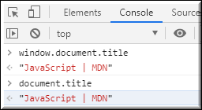
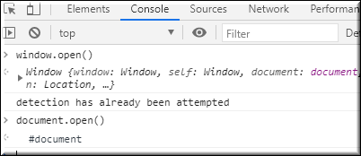

A clear understanding of Browser Object Model (BOM) and Document Object Model(DOM) resolves the problem.
The Browser Object Model contains objects that represent the current browser window or tab. The topmost object in the BOM is the window object representing the window or tab or an iframe sometimes. Window object has properties like browser history, location and the device’s screen etc. In case of multi tab browser, a window object represents a single tab, but some of its properties like innerHeight, innerWidth and methods like resizeTo() will affect the whole browser window.
When a web page is loaded, the browser creates a Document Object Model of the page. The document object represents the whole html document as a tree of Objects(HTML, HEAD, BODY, and other HTML tags). It is the root element that represents the html document.
It is a programming interface that allows us to create, change, or remove elements from the document. We can also add events to these elements to make our page more dynamic. The DOM views an HTML document as a tree of nodes. A node represents an HTML element.
The document object is your html, aspx, php, or other document that will be loaded into the browser. The document actually gets loaded inside the window object and has properties available to it like title, URL, cookie, etc.

Figure 1 :Hierarchy of Window and Document object using BOM and DOM
It is the top most object and outermost element of the object hierarchy as shown in Figure 1.
The window object represents a window/tab containing a DOM document where as document object is property of window object that points to the DOM document loaded in that window.
The window object represents a window/tab containing a DOM document where as document object is property of window object that points to the DOM document loaded in that window. You can access a document object either using window.document property or using document object directly as window is global object. In the below example, title is the property of document object.
The other major difference is that both window object and document object have properties and methods. Few method names are same in both objects but with different behavior. In the below example window.open() opens a new tab or window and document.open() creates a blank document within the window.

Screen is the window property that holds information of browser screen. It refers to screen object associated with that window object. Used to display screen width, height, colorDepth, pixelDepth etc.
Similar to document screen can be accessed either by window.screen or screen object directly. Screen object doesn't have any methods as in window and document objects.